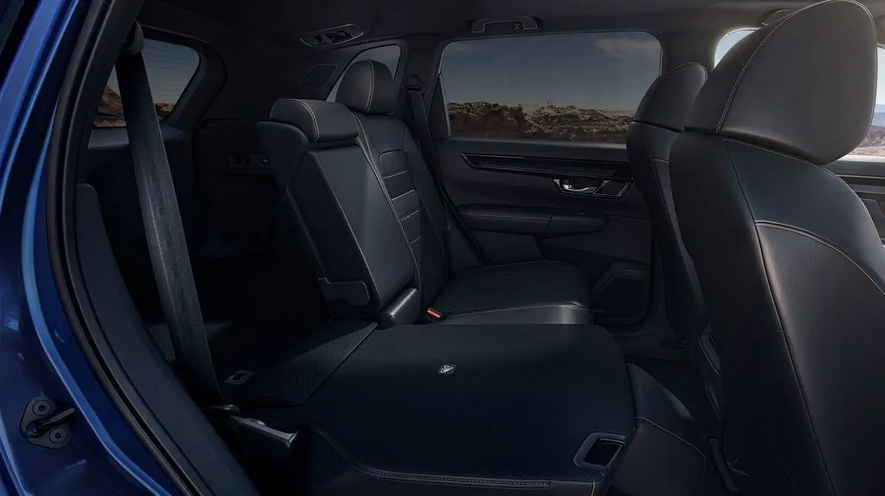
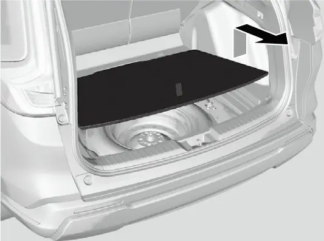
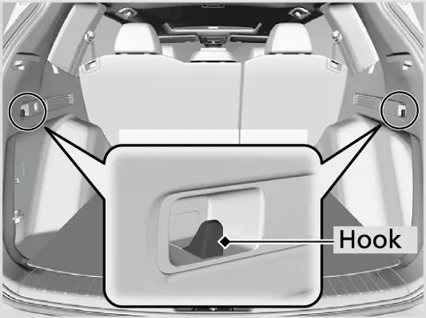
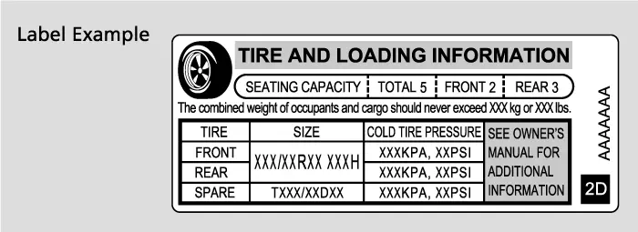
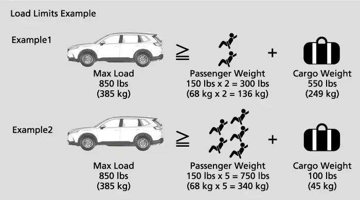
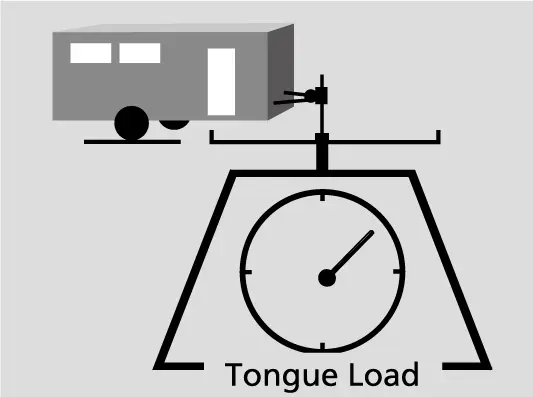
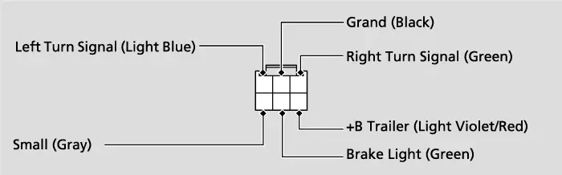
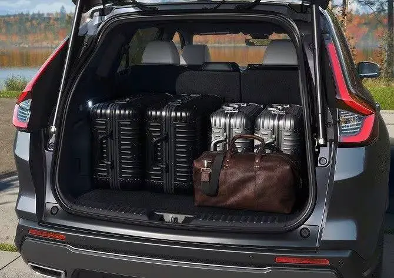

קאפיטל 22
לאסט-פלאץ און פראקטישקייט
זייטן 346–355 אינעם PDF
לאסט-פלאץ אויף איין בליק
לויט Honda'ס אפיציעלע ספעציפיקאציעס האט דער EX 39.3 קוביק פיס לאסט-פלאץ הינטער די הינטערשטע זיצן, ווען די זיצן שטייען אויפגעשטעלט. דאס איז א גרויסער, גלייכער פלאץ וואס מען קען גוט אויסניצן. Honda'ס feature guide (די אנווייזונג פון די פיטשערס) ווייזט אויף דעם ברייטן פלאר און די גרויסע עפענונג פונעם טעילגעיט. צוזאמען מאכן זיי עס גרינג אריינצושיבן א וועגעלע, טשעמאדאנען אדער א גאנצע וואך'ס איינקויפן, אפילו ווען אלע זיצן זענען פארנומען.
ווען מען לייגט אראפ די הינטערשטע רוקן-לענעס, וואקסט דער פלאץ צו 76.5 קוביק פיס, געמאסטן הינטער די פארנטיגע זיצן. דער הינטערשטער זיץ איז צעטיילט 60/40, אזוי קען מען אראפלייגן נאר די שמאלע זייט אדער נאר די ברייטע זייט. אזוי קען מען פירן עפעס לאנגס, ווי א גרויסע קעסטל אדער א צולייגבארן טיש, און איינער אדער צוויי פאסאזשירן קענען נאך אלץ באקוועם זיצן הינטן. Honda'ס feature guide שרייבט אויך אז מען דארף נישט אראפלייגן די קאפ-שטיצעס און נישט איבערדרייען די אונטערשטע זיץ-קישנס פאראויס כדי אראפצולייגן די רוקן-לענעס.
EX לאסט און וואג ציפערן
| זאך | ציפער | מקור |
|---|---|---|
| לאסט-פלאץ, הינטערשטע זיצן אויפגעשטעלט | 39.3 cu ft | Honda ספעציפיקאציעס |
| לאסט-פלאץ, הינטערשטע זיצן אראפגעלייגט | 76.5 cu ft | Honda ספעציפיקאציעס |
| מאקסימום לאסט (מענטשן + לאסט) | 850 lbs (385 kg) | אונער'ס מאנואל |
| שלעפן קאפאציטעט | 1,500 lbs (680 kg) | ספעציפיקאציעס און מאנואל |
| גרעניץ פאר יעדן זייט-האקן | 6 lbs (3 kg) יעדער | אונער'ס מאנואל |
Honda'ס feature guide רעכנט אויס נאך דריי זאכן אינעם לאסט-פלאץ. א פאר LED לייכטן צינדן זיך אן ווען מען עפנט דעם טעילגעיט, וואס העלפט ביים איינלאדן ביינאכט. פיר tie-down anchors (צובינד-רינגען) אויפן פלאר האלטן גרעסערע זאכן אויפן ארט. א 12-וואלט power outlet (שטעקער) איז אינגעשטעלט אינעם לאסט-פלאץ. דער feature guide באשרייבט די CR-V ליניע בכלל, דערפאר קוקט אין אייער אייגענעם קאר פונקטליך וואו דער שטעקער געפינט זיך.

דער מאנועלער טעילגעיט
דער EX האט א מאנועלן טעילגעיט. דער עלעקטרישער power tailgate קומט אויף דעם EX-L און העכערע טרים'ס. Honda רופט עס א לייכטער טעילגעיט, אזוי אז מען הייבט עס גרינג אויף. ווען ער איז אפן, גיט ער אייך אויך א דאך פון רעגן בשעת'ן איינלאדן. דער הינטערשטער ווייפער מיט אינטערוואלן און דער וואשער זענען מאנטירט אויפן טעילגעיט.
עפענען
ווען אלע טירן זענען אויפגעשלאסן, איז דער טעילגעיט אויך אויפגעשלאסן. דריקט דעם אויסערליכן האנטל און הייבט. ווייל דער EX האט דעם keyless access system (עפענען אן שליסל), דארפט איר נישט פריער אויפשליסן אויב איר האט דעם רימאוט ביי זיך. דריקט פשוט דעם האנטל. לויטן מאנואל קען דער טעילגעיט זיך אויך אויפשליסן ווען אן אנדערער מענטש מיט א keyless רימאוט איז אין דער נאנט. דער מאנואל דערמאנט א טעילגעיט unlock קנעפל אויף געוויסע רימאוטס. עס איז באצייכנט "not available on all models" (נישט ביי אלע מאדעלן), דערפאר טשעקט אייער אייגענעם פאב. אויב איר האט יא דעם קנעפל און איר עפנט דעם טעילגעיט דערמיט, לאקט זיך דער טעילגעיט אויטאמאטיש ווען איר מאכט אים צו.
צומאכן
צומאכן דעם טעילגעיט
- כאפט דעם אינעווייניגסטן האנטל און ציט דעם טעילגעיט אראפ.
- האלט דעם קאפ אפ, און האלט די הענט ארויס פונעם שפאלט צווישן טעילגעיט און לאסט-פלאץ.
- שטופט דעם טעילגעיט פון דרויסן ביז ער איז אינגאנצן צוגעמאכט.
אויב דער טיר פון דרייווער איז פארשלאסן ווען איר מאכט צו דעם טעילגעיט, לאקט זיך דער טעילגעיט אויטאמאטיש און געוויסע דרויסנדיגע לייכטן בלינקען. לאזט קיינמאל נישט דעם keyless רימאוט אינעם לאסט-פלאץ. אויב יא, פייפט דער ביפער און דער טעילגעיט לאזט זיך נישט צומאכן. בכלל, נעמט מיט דעם רימאוט יעדעס מאל ווען איר גייט ארויס פונעם קאר (זעט קאפיטל 21).
זיכערהייט ביים טעילגעיט
- איידער איר עפנט אדער מאכט צו דעם טעילגעיט, מאכט זיכער אז קיין מענטשן אדער זאכן שטייען נישט אין וועג. ווער עס ווערט פארכאפט דערפון קען ווערן שווער פארוואונדעט.
- ביים מאנועלן טעילגעיט, עפנט אים ביז גאנץ אויבן. א האלב-אפענער טעילגעיט קען אנהייבן צוגיין פון זיין אייגענער וואג.
- זייט עקסטרע פארזיכטיג ביי ווינט, וואס קען צושטופן דעם טעילגעיט.
- האלט דעם טעילגעיט צו בשעת'ן פארן, כדי צו פארמיידן שאדן און כדי די ארויסגאס-גאזן זאלן נישט אריינקומען אינעם קאר.
- ווען איר לאדט איין בשעת דער מאטאר לויפט, שטייט נישט פאר דעם עקזאסט רער, ווייל איר קענט זיך פארברענען.
- לאזט קיינמאל נישט קיינעם פארן אינעם לאסט-פלאץ. ער קען ווערן געשעדיגט ביי שטארקן ברעמזן, פלוצלונגע גיכקייט אדער א קראך.
- האלט די בעגאזש און אנדערע זאכן אפ פון די support struts (שטיצע-שטאנגען) פונעם טעילגעיט.
אראפלייגן און אויפשטעלן די הינטערשטע זיצן
אראפלייגן די הינטערשטע זיצן נעמט בערך א מינוט, אבער די סדר איז וויכטיג. יעדע זייט לייגט זיך אראפ באזונדער.
אראפלייגן א הינטערשטע רוקן-לענע
- נעמט אראפ אלעס פונעם הינטערשטן זיץ-קישן און פונעם פלאר.
- לייגט אוועק דעם מיטל סיט בעלט: שטעקט אריין זיין latch plate (מעטאלענע צונג) אין דעם שפאלט אויף דער זייט פונעם anchor buckle.
- לאזט דעם מיטל גארטל זיך צוריקציען אין דעם האלטער אויפן סופיט.
- לאזט אראפ די הינטערשטע קאפ-שטיצע ביז די נידעריגסטע פאזיציע.
- שטופט צוריק די מיטל ארעם-לענע אין דער רוקן-לענע.
- ציט דעם release lever (אפלאז-הענטל) און לייגט אראפ די רוקן-לענע.
Honda'ס feature guide שרייבט אז די אפלאז-הענטלעך זיצן אויבן אויף דער דרויסנדיגער ברעג פון יעדע רוקן-לענע, אזוי קען מען אראפלייגן דעם זיץ פון די זייט-טירן. מען דארף קיינמאל נישט איבערדרייען די זיץ-קישנס פאראויס.

אויפשטעלן א הינטערשטע רוקן-לענע
- שטופט די רוקן-לענע שטארק צוריק ביז זי כאפט זיך איין.
- טשעקט אז אלע הינטערשטע אקסל-גארטלען ליגן פאר דער רוקן-לענע, נישט פארכאפט הינטער איר.
- מאכט זיכער אז די רוקן-לענע, די קאפ-שטיצעס און דער קישן זענען אלע גוט איינגעכאפט.
- וויגט די רוקן-לענע אהין און צוריק צו באשטעטיגן אז זי איז פארשלאסן, איידער איר פארט.
ווען דער זיץ שטייט אויף, קען יעדער הינטערשטער פאסאזשיר אדזשאסטן דעם recline (אנלען) ווינקל. באקוועמע זיצן ווערט באשריבן אין קאפיטל 13.
פלאר, רינגען און האקן
אראפלאזן דעם לאסט-פלאר דעקל
דעם לאסט-פלאר דעקל קען מען שטעלן אין א נידעריגערע פאזיציע, וואס דער מאנואל רעקאמענדירט פאר אוועקלייגן א הויכע זאך.
שטעלן דעם פלאר דעקל אין דער נידעריגער פאזיציע
- ציט דעם שנור צו עפענען דעם לאסט-פלאר דעקל.
- ציט דעם שנור ארויף צו אויפהייבן דעם דעקל.
- ציט דעם דעקל צו זיך ביז ער ווערט פריי פון די support rods (שטיצע-שטאנגען).
- שטופט דעם ווייטערן עק אראפ ביזן דנא, ָאונטער די שטיצע-שטאנגען.
- לאזט אראפ דעם נאענטערן עק.

צובינד-רינגען
דער לאסט-פלאר האט פיר tie-down anchors (צובינד-רינגען), לויט Honda'ס feature guide. דער מאנואל זאגט אז מען קען זיי ניצן צו אנמאכן א נעץ וואס האלט די זאכן אויפן ארט. בינדט צו אדער דעקט מיט א נעץ אלעס וואס איז שווער, אויך זאכן וואס ציען זיך אריבער אויף די אראפגעלייגטע הינטערשטע זיצן. לויזע זאכן קענען פליען פאראויס און שעדיגן מענטשן ווען מען מוז שטארק ברעמזן. קיינער זאל נישט אריינלאנגען אינעם לאסט-פלאץ בשעת דער קאר פארט.
לאסט-האקן און מאנטל-האקן
די לאסט-האקן אויף ביידע זייטן פונעם לאסט-פלאץ זענען געמאכט פאר לייכטע זאכן, ווי א קליין זעקל עסנווארג. דער מאנואל שטעלט א פעסטע גרעניץ: נישט מער ווי 6 lbs (3 kg) אויף יעדן זייט-האקן, און קיין גרויסע זאכן, אנדערש קענען די האקן ווערן צעבראכן. אינעם קאר איז דא א מאנטל-האקן ביים הינטערשטן לינקן grab handle (אנהאלט-הענטל), וואס איז אויך נאר פאר לייכטע זאכן, קיינמאל נישט פאר שווערע זעק.

מאקסימום לאסט גרעניץ
דער אונער'ס מאנואל שרייבט אז דער מאקסימום לאסט פאר דעם CR-V איז 850 lbs (385 kg). די סומע נעמט אריין אלע מענטשן אינעם קאר, אויך דעם דרייווער, פלוס אלע לאסט, אלע צוגאבן, און דעם tongue load (דרוק פונעם טרעילער אויפן היטש) אויב איר שלעפט א טרעילער. דער ציפער פאר אייער אייגענעם קאר שטייט געדרוקט אויפן Tire and Loading Information לעיבל (טייער און לאסט אינפארמאציע) אויף דער ראם פונעם דרייווער'ס טיר.

עפנט דעם דרייווער'ס טיר און קוקט אויף דער טיר-ראם. דער לעיבל ווייזט וויפיל מענטשן דער קאר קען פירן, די גאנצע וואג וואס ער קען טראגן, די ארגינעלע טייער גרייסן פאר פארנט, הינטן און דעם ספער, און דעם ריכטיגן קאלטן טייער-דרוק פאר יעדן. טייער-דרוק ווערט באשריבן אין קאפיטל 16. פארן איינלאדן דארפט איר דעם זאץ וואס לייענט זיך: "The combined weight of occupants and cargo should never exceed XXX kg or XXX lbs." (די צוזאמענגערעכנטע וואג פון מענטשן און לאסט טאר קיינמאל נישט איבערשטייגן XXX kg אדער XXX lbs.)
אויסרעכענען וויפיל בעגאזש איר קענט פירן
- געפינט דעם זאץ וועגן דער צוזאמענגערעכנטער וואג אויפן טיר-ראם לעיבל.
- רעכנט צוזאמען די וואג פונעם דרייווער און אלע פאסאזשירן.
- נעמט אראפ די סומע פונעם ציפער אויפן לעיבל.
- דער רעזולטאט איז וויפיל לאסט און בעגאזש איר קענט נאך לייגן.
- מאכט זיכער אז די בעגאזש און לאסט וואס איר לאדט איין גייט נישט אריבער דעם ציפער.
- אויב איר שלעפט, נעמט אויך אראפ דעם טרעילער'ס tongue load.
א ביישפיל: נעמט 850 lbs און פינף מענטשן פון 150 lbs יעדער. דאס איז 750 lbs מענטשן, בלייבט נאר 100 lbs פאר בעגאזש. א פולער קאר מיט שווערע זעק קען גיין איבער דער גרעניץ פריער ווי איר מיינט.
דער זעלבער טיר-ראם לעיבל ווייזט נאך צוויי ציפערן. GVWR, דער Gross Vehicle Weight Rating (די גאנצע ערלויבטע וואג פונעם קאר), איז די מאקסימום ערלויבטע וואג פונעם קאר פלוס אלע מענטשן, צוגאבן און לאסט, אריינגערעכנט דעם tongue load. GAWR, דער Gross Axle Weight Rating (ערלויבטע וואג אויף יעדן אקס), איז די מאקסימום ערלויבטע וואג אויף יעדן אקס. בלייבט אונטער ביידע.

שלעפן
Honda'ס ספעציפיקאציעס ערלויבן דעם EX צו שלעפן 1,500 lbs, און דער מאנואל זאגט דאס זעלבע. דער טרעילער, זיין לאסט, און אלעס אין אים אדער אויף אים, טאר נישט איבערשטייגן 1,500 lbs (680 kg). גיין איבער די גרעניץ קען שטארק שעדיגן דאס סטירן און די פארפארמאנס, און קען צעשעדיגן דעם מאטאר און דעם drivetrain (קראפט-איבערטראגונג). טשעקט די וואג אויף א פובליק וואגשאל. אויב עס איז נישטא קיינע, רעכנט צו די געשאצטע וואג פון אייער לאסט צו דער טרעילער וואג וואס דער פאבריקאנט גיט אן, און דערנאך רעכנט צו דעם tongue load. פארמיידט שלעפן אין די ערשטע 600 מייל (1,000 km) פונעם קאר.
Tongue load איז די וואג וואס דער אינגאנצן אנגעלאדענער טרעילער'ס צונג לייגט אויפן היטש. עס זאל זיין בערך 10 פראצענט פון דער גאנצער טרעילער וואג, אזוי ארום 150 lbs פאר א 1,500-lb טרעילער. צו פיל tongue load פארמינערט די כאפונג פון די פארנטיגע טייערס און די קאנטראל פונעם סטירינג. צו ווייניג לאזט דעם טרעילער זיך וואקלען. כדי עס צו טרעפן ריכטיג, הייבט אן מיט לייגן 60 פראצענט פון דער לאסט צום פארנט פונעם טרעילער און 40 פראצענט צום הינטן, דערנאך פאררעכט ווי נויטיג. דער tongue load ווערט צוגערעכנט צו דער 850-lb גרעניץ.

שלעפ אויסשטאטונג
- דער היטש מוז זיין אן אפראבירטער סארט, ריכטיג צוגעשרויפט צום אונטערשטן טייל פונעם קאר.
- ניצט שטענדיג safety chains (זיכערהייט קייטן), מיט גענוג לויז פאר די דרייען, אבער קיינמאל נישט שלעפנדיג אויף דער ערד.
- די טרעילער ברעמזן מוזן זיין עלעקטראניש געטריבן. קיינמאל נישט אנשליסן אין דעם קאר'ס הידראוליש ברעמז סיסטעם, ווייל דאס שוואכט אפ די ברעמזונג.
- אסאך סטעיטס און פראווינצן פאדערן ספעציעלע דרויסנדיגע שפיגלען. שטעלט זיי אריין סיי ווי אויב אייער זעאונג איז באגרעניצט.
- די טרעילער לייכטן און אויסשטאטונג מוזן זיך האלטן צו די פעדעראלע, סטעיט און לאקאלע געזעצן.
- Honda רעקאמענדירט א Honda wiring harness (דראט-סיסטעם) און converter וואס דער דילער שטעלט אריין. Ball mounts, hitch kits און wiring kits קען מען באקומען ביי דילערס.
- דער טרעילער ליכט-קאנעקטאר איז הינטער דעם לינקן זייט-פאנעל אינעם לאסט-פלאץ. אפילו מיט א harness וואס איז נישט פון Honda, פרעגט א דילער פאר'ן ריכטיגן קאנעקטאר און פינס.

דאך און צוגאבן
די טיילן פונעם מאנואל וואס באהאנדלען דעם קאפיטל געבן נישט קיין גרעניץ פאר לאסט אויפן דאך. Roof rails (דאך-שטאנגען) זענען נישט סטאנדארט אויפן EX. Honda'ס ספעציפיקאציעס ווייזן שווארצע roof rails נאר אויף Sport און העכערע טרים'ס. איידער איר פירט עפעס אויפן דאך, פרעגט אייער דילער וועלכע Honda racks פאסן פאר אייער EX און וויפיל וואג זיי ערלויבן. נישט טרעפן.
Honda'ס feature guide רעכנט אויס ארגינעלע CR-V צוגאבן. צווישן זיי: א frame-mount האלטער פאר א בייסיקל, א האלטער פאר א surfboard, א געצעלט, א טעילגעיט spoiler, א cargo organizer (ארגאנייזער פארן לאסט-פלאץ), באלויכטענע טיר-שוועל דעקאראציע, שוץ פאר די רוקן-לענעס, און א טרעילער היטש. אונטער שוץ דערמאנט ער אויך all-season פלאר מאטן און splash guards (שפריץ-שוץ). צוגאבן זענען פאראן פאר געוויסע מאדעלן און טרים'ס, דערפאר באשטעטיגט מיט אייער דילער וואס פאסט פאר אייער EX.
ארגינעלע צוגאבן זענען אינזשינירט אין פאבריק פאר דעם קאר. אויב איר קויפט זיי צוזאמען מיטן קאר, קען מען זיי צולייגן צו דער פינאנצירונג, און זיי האבן א 3-יעריגע, 36,000-מייל באגרעניצטע גאראנטיע ווען מען שטעלט זיי אריין ביים קויפן. פאר א פאמיליע קאר זענען שוץ פאר די רוקן-לענעס און א cargo organizer פראקטישע ברירות. א לאסט-נעץ ווערט צוגעבונדן צו די צובינד-רינגען. די מקורות דערמאנען נישט קיין cargo cover (צודעק פארן לאסט-פלאץ) פארן EX, דערפאר פרעגט דעם דילער.
רייניגן אינעווייניג און דעם לאסט-פלאץ
פאר שמוץ, ניצט א נאסע שמאטע מיט מילדע זייף און ווארעם וואסער, דערנאך נעמט אראפ די רעשטלעך מיט א ריינע שמאטע. פאר די סיט בעלטס, ניצט א ווייכע בארשט מיט מילדע זייף און ווארעם וואסער, לאזט זיי טריקענען אין דער לופט, און ווישט אפ די גארטל-רינגען מיט א ריינע שמאטע. ניצט קיינמאל נישט קיין silicone sprays אויף שאלטערס אדער אודיא קנעפלען, ווייל זיי קענען פאראורזאכן פעלערן אדער אפילו א פייער. אויב עס ווערט צופעליג באשפריצט, פרעגט א דילער. ניצט קיינמאל נישט קיין אלקאלי אדער ארגאנישע סאלווענטן ווי benzene אדער גאזאלין. נאכן ניצן סיי וועלכע כעמיקאל, ווישט עס לייכט אפ מיט א טרוקענע שמאטע, און לאזט נישט ליגן געניצטע שמאטעס אויף פלאסטיק טיילן אדער שטאף פאר א לאנגע צייט.
ווישט אפ די הינטערשטע שויב אין דער זעלבער ריכטונג ווי די דינע דראטן אינעווייניג, מיט א ווייכע שמאטע, כדי זיי נישט צו שעדיגן. גיסט נישט קיין וואסער אדער גלאז-רייניגער אויף אדער ארום די עלעקטרישע טיילן לעבן דעם הינטער-שפיגל. דעם דרייווער'ס פלאר מאטע הענגט מען אויף פלאר-רינגען וואס האלטן זי פון רוקן זיך פאראויס, דערפאר לייגט קיינמאל נישט קיין אנדערע מאטע אויף איר. יעדע נישט-ארגינעלע מאטע מוז זיין געמאכט פאר דעם קאר, גוט פאסן און ריכטיג צוגעפעסטיגט ווערן. לייגט די הינטערשטע מאטן אזוי אז זיי זאלן נישט שטערן די פארנטיגע זיצן.

אפטע פראגעס
פראגע: דארף איך אויפשליסן דעם טעילגעיט איידער איך עפן אים?
ענטפער: נישט אויב איר האט דעם keyless רימאוט ביי זיך. דריקט פשוט דעם אויסערליכן האנטל און הייבט.
פראגע: פארוואס לאזט זיך דער טעילגעיט נישט צומאכן?
ענטפער: דער keyless רימאוט ליגט מעגליך אינעם לאסט-פלאץ. אין אזא פאל פייפט דער ביפער און דער טעילגעיט לאזט זיך נישט צומאכן.
פראגע: מוז איך ארויסנעמען די הינטערשטע קאפ-שטיצעס אדער איבערדרייען די קישנס צו אראפלייגן די זיצן?
ענטפער: ניין. לאזט אראפ די קאפ-שטיצע, לייגט אוועק דעם מיטל גארטל און די ארעם-לענע, דערנאך ציט דעם release lever.
פראגע: וויפיל בעגאזש קען איך פירן מיט פינף מענטשן?
ענטפער: נעמט אראפ די וואג פון די מענטשן פונעם ציפער אויפן לעיבל. מיט 850 lbs און פינף מענטשן פון 150 lbs, בלייבט 100 lbs.
פראגע: קען איך שלעפן גלייך נאכן קויפן דעם קאר?
ענטפער: פארמיידט שלעפן אין די ערשטע 600 מייל (1,000 km).
פראגע: וואו שליס איך אן די טרעילער לייכטן?
ענטפער: דער טרעילער ליכט-קאנעקטאר איז הינטער דעם לינקן זייט-פאנעל אינעם לאסט-פלאץ.
הויפט פונקטן
- דער לאסט-פלאץ איז 39.3 cu ft מיט די זיצן אויפגעשטעלט און 76.5 cu ft מיט די זיצן אראפגעלייגט.
- עפנט דעם מאנועלן טעילגעיט ביז גאנץ אויבן, און האלט אים צו בשעת'ן פארן.
- לייגט אוועק דעם מיטל גארטל און לאזט אראפ די קאפ-שטיצע איידער איר לייגט אראפ א רוקן-לענע.
- יעדער זייט-לאסט-האקן האלט מאקסימום 6 lbs (3 kg).
- דער מאקסימום לאסט איז 850 lbs (385 kg), אריינגערעכנט אלע מענטשן און דעם tongue load.
- די שלעפ גרעניץ איז 1,500 lbs, מיט א tongue load פון בערך 10 פראצענט.
- דער EX האט נישט קיין roof rails, דערפאר פרעגט א דילער איידער איר פירט עפעס אויפן דאך.